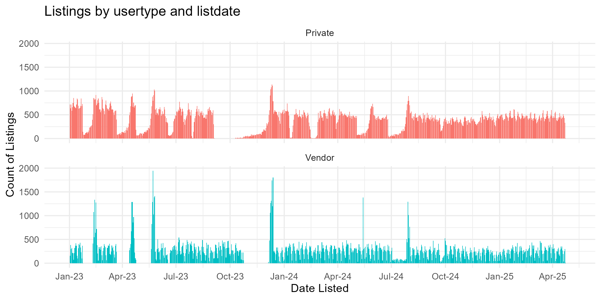

Did closing the gun show loophole actually work?
TL;DR: no
University of Cambridge
Background
Private party gun sales
85% of the guns used in a crime that are recovered by the police were sold at least once through a private party transaction (Wintemute, Braga, and Kennedy 2010).
There is a large and growing black market of guns that are being sold by people who are in the business of dealing and are doing it without a license; and therefore, they are not running background checks the way the law requires. And it is fueling violence.
Steven Dettelbach, ATF Director, 10 Apr 2024
I’ve spent hours with families who’ve lost loved ones to gun violence. They all have the same message: ‘Do something.’ Today, my Administration is taking action to make sure fewer guns are sold without background checks.
President Biden, 10 Apr 2024
Every year, thousands of unlicensed gun dealers sell tens of thousands of guns without a background check, including to buyers who would have failed one – domestic abusers, violent felons, and even children. This single gap in our federal background check system has caused unimaginable pain and suffering. Today, as the head of the White House Office of Gun Violence Prevention, I am proud to say that all gun dealers must conduct background checks no matter where or how they sell.
Vice President Harris, 10 Apr 2024
Not just gun shows
Commercial Dealers
- Anyone “engaged in the business” of selling firearms
- Federal Firearms License (FFL)
- Background checks required
- National Instant Criminal Background Check System (NICS)
Private Sellers
- No licenses
- Checks required in 21 states and DC
- Not required in 29 states
13% of recent firearm purchases in the US occurred without a background check, including 50% of private purchases made… outside of stores
Policy landscape before May 20
The policy: Redefinition of dealers
Policy announced April 10, took effect May 20
You will need a license if you are devoting time, attention, and labor to dealing in firearms as a regular course of trade or business to predominantly earn a profit through the repetitive purchase and resale of firearms… By contrast, if you make only occasional resales of firearms to enhance your personal collection or if you liquidate your personal collection (without restocking), you do not need to be licensed” (ATF 2024, p. i)
Private sellers doing so to earn profit now required to obtain FFLs and conduct background checks
The injunction
A federal lawsuit in Northern District of Texas provided injunctive relief for Texas, Lousiana, Mississippi and Utah
Private sellers in these states would not be required to obtain FFLs or conduct background checks
Policy landscape after May 20
The gun market
If private individuals are “engaged in the business” of selling, they can…
- Ignore change and continue selling firearms without a license
- Stop selling firearms
- Obtain FFL to continue selling1
A decline in private dealers should increase background checks as buyers turn to FFLs.
Our focus
Fewer firearms sold without background checks may reduce less gun violence
But any effect on violence will only occur through changes in legal gun markets
So we’re focusing on the proximal mediator: legal gun markets
Research Questions
As a result of the rule change…
- Did FFLs increase?
- Did background checks increase?
- Did the volume of gun sales change?
- Did private listings decline?
- Did commercial listings increase?
Research design
Data
- FFL lists from ATF
- Number of new licenses
- NICS background checks from FBI
- Number of background checks for firearm purchases
- Firearm sale listings from Armslist.com
- Number of new private listings
- Number of new dealer listings
Arsmlist
Craigslist for guns
Listings

What we want
Measure
State-month counts of new listings for firearms from private sellers and commercial dealers
Key fields
- Date listed
- State
- Type of vendor
- Category, i.e., firearm
Scraper
- Scrape of live listings every few days since 2021
- VPN rotation to evade blocks
- Relational database for storage
What we got
Oh no
New scraper
- Brute force scraping by post-ID
- There are millions of post IDs
- No idea how long it will take
- No idea if problems will be resolved
We’re doing a pilot now
FFLs and Background Checks
Analytical approach
Difference-in-difference * Single tratment effect coefficient; ATT across 12 month period
Event study * ATT in each month before and after rule change * an assess parallel trends; should be no lead effects * Can see timing, e.g., delayed effect or anticipation
Treatment group: 25 stats without universal background checks as of May 20, 2024 and which did not receive injunctive relief
Compare treated group to untreated
Identifying assumption: In absence of rule change, average untreated potential outcomes for treated states and control group would hav efollowed parallel paths in post-treatment periods.
Treatment map
Estimand
DID Plot?
The average difference in the outcome for the treated states in the 12 month pre-treatment period versus after the 12 months after the rule change, minus the average difference for the control group over the same time period.
Poisson Pseudo-MLE (PPML)
\[ log(\mathbb{E}[y_{st}]) = \alpha + \beta D_{st} + \theta_s + \gamma_t \]
Variables
- \(Y_{st}\): FFLs, checks, or sales
- \(D_{st}\): Treatment indicator
- \(s\): State
- \(t\): Month-year
Parameters
- \(\beta\): Treatment effect
- \(\theta\): State fixed effect
- \(\gamma\): Month-year fixed effect
PPML Event Study
\[ log(\mathbb{E}[y_{st}]) = \alpha + \sum_{k=-12}^{12} \left(\beta_kD_{st}^k\right) + \theta_s + \gamma_t \]
Same as before except:
- \(k\) indexes time from treatment
- \(D_{sk}=1\) for \(k\ge0\)
- \(\beta_k\) is effect for \(k^{th}\) month after rule change
- Pre-intervention: the average difference in the outcome between the control and treated states in each month
- Post-intervention: the average treatment effect for each month
Robustness tests
- Linear TWFE with inverse hyperbolic sine
- Rambachan & Roth (2023) HonestDiD parallel trends test
- ITT analysis including injunction states
- Anticipation: Extend time period to 12 months prior to Bipartisan Safer Communities act on June 22nd, 2022
Results
FFL DiD
Table 1. DiD Estimates: New FFLs Coef. Std. Err. Treat 0.103 0.059
Constant 1.750*** 0.020 Observations Clusters 1150 46
FFL Event Study
Checks DiD
Table 2. DiD Estimates: Background Checks Coef. Std. Err. Treat 0.004 0.020
Constant 10.352*** 0.006 Observations Clusters 1150 46
Checks Event Study
Discussion
Didn’t do anything
Why?
the nature of the rule change was ambiguous, leading some people to believe that nothing had really changed;
the rule change had little deterrent effect because it was minimally enforced, perceived to be minimally enforced, or because sellers were unaware of the change;
not that many sellers were affected by the rule change (i.e., few private sellers were actually redefined as being “engaged in the business” of dealing firearms to “predominantly earn a profit”).
AMBIGUOUS / NOTHING CHANGED
Nothing much has really changed. Private sales are still allowed. I can still post up at a gun show or post a classified to sell off parts of my collection to fund new purchases. The rule doesn’t close a loophole, it just creates (or really mostly restates) the existing rules about straw purchases and operating without a license. The rule was and remains that private sales don’t require a background check. And the people regularly buying and selling guns for a profit, or otherwise acting as straw purchasers, were already breaking the law and continue to be breaking the law, and this rule doesn’t seem to be creating new mechanisms for identifying and stopping those people. So really this seems like a preservation of the status quo… At best I think a bunch of government lawyers got paid to waste a bunch of ink on a rule that will serve as a symbolic but ultimately meaningless gesture to people who want to see politicians do something about gun laws, but don’t fundamentally understand gun laws.
- sh1tpost1nsh1t, Reddit’s r/law
MINIMAL ENFORCEMENT / PERCEPTION OF IT / UNAWARE
Implementation “dead on arrival”
FOIA of info on investigations and prosecutions for dealing without FFL (18 U.S.C. §922(a)(1)(A))
So far no evidence changes:
- 25 cases per month May 2023 to April 2024
- 26 per month in first 7 months of policy
Few actually affected
Questions
Contact:
Institute of Criminology
University of Cambridge
clanfear.github.io
cl948@cam.ac.uk